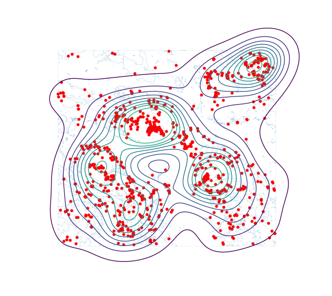
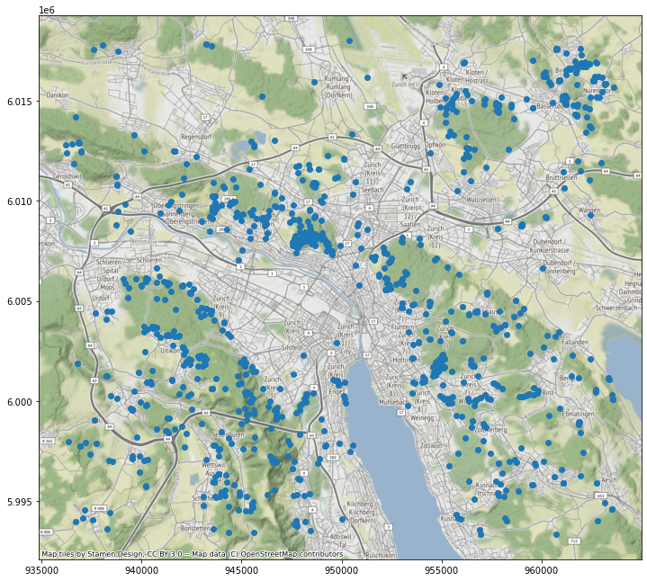
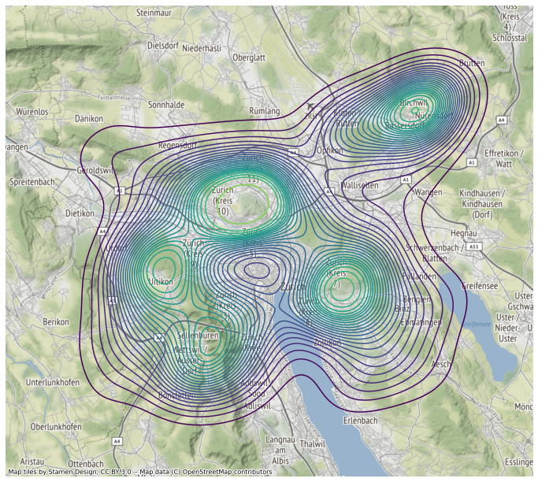

Demo: Geodaten visualisieren¶
In folgenden Beispielen zeigen wir noch ein paar einfache Wege, wie ihr die Zeckenstichdaten visualisieren könnt.
import pandas as pd
import geopandas as gpd
import matplotlib.pyplot as plt
import descartes
zeckenstiche_full = pd.read_csv("data/zeckenstiche_full.csv")
wald = gpd.read_file("data/wald.gpkg")
zeckenstiche_gpd = gpd.GeoDataFrame(zeckenstiche_full,
geometry=gpd.points_from_xy(zeckenstiche_full['x'], zeckenstiche_full['y']),
crs = 2056)
---------------------------------------------------------------------------
FileNotFoundError Traceback (most recent call last)
/tmp/ipykernel_6949/600820985.py in <module>
4 import descartes
5
----> 6 zeckenstiche_full = pd.read_csv("data/zeckenstiche_full.csv")
7
8 wald = gpd.read_file("data/wald.gpkg")
~/miniconda3/envs/agi-jb/lib/python3.9/site-packages/pandas/util/_decorators.py in wrapper(*args, **kwargs)
309 stacklevel=stacklevel,
310 )
--> 311 return func(*args, **kwargs)
312
313 return wrapper
~/miniconda3/envs/agi-jb/lib/python3.9/site-packages/pandas/io/parsers/readers.py in read_csv(filepath_or_buffer, sep, delimiter, header, names, index_col, usecols, squeeze, prefix, mangle_dupe_cols, dtype, engine, converters, true_values, false_values, skipinitialspace, skiprows, skipfooter, nrows, na_values, keep_default_na, na_filter, verbose, skip_blank_lines, parse_dates, infer_datetime_format, keep_date_col, date_parser, dayfirst, cache_dates, iterator, chunksize, compression, thousands, decimal, lineterminator, quotechar, quoting, doublequote, escapechar, comment, encoding, encoding_errors, dialect, error_bad_lines, warn_bad_lines, on_bad_lines, delim_whitespace, low_memory, memory_map, float_precision, storage_options)
584 kwds.update(kwds_defaults)
585
--> 586 return _read(filepath_or_buffer, kwds)
587
588
~/miniconda3/envs/agi-jb/lib/python3.9/site-packages/pandas/io/parsers/readers.py in _read(filepath_or_buffer, kwds)
480
481 # Create the parser.
--> 482 parser = TextFileReader(filepath_or_buffer, **kwds)
483
484 if chunksize or iterator:
~/miniconda3/envs/agi-jb/lib/python3.9/site-packages/pandas/io/parsers/readers.py in __init__(self, f, engine, **kwds)
809 self.options["has_index_names"] = kwds["has_index_names"]
810
--> 811 self._engine = self._make_engine(self.engine)
812
813 def close(self):
~/miniconda3/envs/agi-jb/lib/python3.9/site-packages/pandas/io/parsers/readers.py in _make_engine(self, engine)
1038 )
1039 # error: Too many arguments for "ParserBase"
-> 1040 return mapping[engine](self.f, **self.options) # type: ignore[call-arg]
1041
1042 def _failover_to_python(self):
~/miniconda3/envs/agi-jb/lib/python3.9/site-packages/pandas/io/parsers/c_parser_wrapper.py in __init__(self, src, **kwds)
49
50 # open handles
---> 51 self._open_handles(src, kwds)
52 assert self.handles is not None
53
~/miniconda3/envs/agi-jb/lib/python3.9/site-packages/pandas/io/parsers/base_parser.py in _open_handles(self, src, kwds)
220 Let the readers open IOHandles after they are done with their potential raises.
221 """
--> 222 self.handles = get_handle(
223 src,
224 "r",
~/miniconda3/envs/agi-jb/lib/python3.9/site-packages/pandas/io/common.py in get_handle(path_or_buf, mode, encoding, compression, memory_map, is_text, errors, storage_options)
700 if ioargs.encoding and "b" not in ioargs.mode:
701 # Encoding
--> 702 handle = open(
703 handle,
704 ioargs.mode,
FileNotFoundError: [Errno 2] No such file or directory: 'data/zeckenstiche_full.csv'
Kernel Density Plot¶
Mit der Erweiterung seaborn lassen sich mit wenigen Zeilen Code eine Kernel Density rechnen und visualisieren. Siehe nachstehenden Code:
import seaborn as sns
f, ax = plt.subplots(1, figsize=(12, 12))
wald.boundary.plot(linewidth=0.1, ax=ax)
zeckenstiche_gpd.plot(color='red', linewidth=0.1, ax=ax)
sns.kdeplot(x = zeckenstiche_full.x, y= zeckenstiche_full.y,shade = False,n_levels = 10, cmap = "viridis", ax = ax)
ax.set_axis_off()
plt.show()

Hintergrundkarte¶
Mit der Erweiterung contextily kann man sehr schnell und einfach Hintergrundkarten in den Plot einbinden. Dafür muss das GeoDataFrame vorher aber in WGS84 Koordinaten (EPSG 3857) konvertiert werden (mit to_crs, s.u.).
import contextily as ctx
f, ax = plt.subplots(1, figsize=(12, 12))
zeckenstiche_gpd.to_crs(epsg = 3857).plot(ax = ax)
ctx.add_basemap(ax)
ax.set_axis_off()
plt.show()

KDE mit Hintergrundkarte¶
Kernel Denisty und Hintergrundkarte können auch kombiniert werden:
lat = zeckenstiche_gpd.to_crs(epsg = 3857).geometry.x
lng = zeckenstiche_gpd.to_crs(epsg = 3857).geometry.y
f, ax = plt.subplots(1, figsize=(12, 12))
sns.kdeplot(x = lat,y = lng,shade = False,n_levels = 25, cmap = "viridis", ax = ax)
ctx.add_basemap(ax)
ax.set_axis_off()
plt.show()
